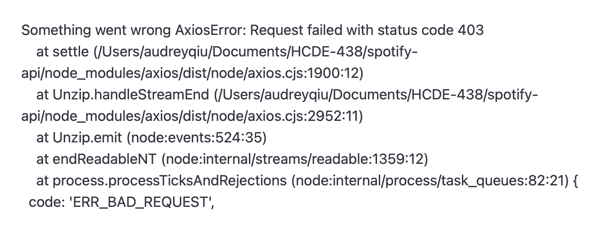

Here is the link to the Github repo for my prototype
Unfortuantely, there are some issues and I'm not able to build and deploy my project through Github currently
As a prototype, it is not really able to be run while hosted in Github. Due to some work-in-progress aspects of my code and some of the external dependencies that come with the Spotify API. Every time it the user clicks on the login button, it goes to an error and is unable to access the rest of the application.
I was building off of my creative sketch from one of the previous assignemnts. I was already very happy with the audiovisualizer from that assignment so I decided to start with tackling accessing and making calls to the Spotify API. This was very challenging and it took up a lot more time that I originally expected it to. At this point, I was still in the process of figuring out how to access specific tokens and pass it between the client and server side.
One issue that I had with hosting my site through GitHub and ensuring that the proper version was the one that was being displayed on my URL. Another big issue was using and familiarizing myself with accessing the Spotify API and reorienting myself to getting used to APIs in general: fetch, express, and other libraries and packages that i would need. At this point, I was stuck on retreiving the access token from the server side code to be able to create an instance of a Spotify Web Player object that lives client-side. I have been utilizing ChatGPT, the Spotify API documentation, and web searches to search for solutions.
My project scope has been almost the same but it definitely is narrower than it was originally. I was a little ambitious and given the deadline constraints it was difficult to really build out what I wanted to the extent that I originally expected.
I underestimated the time that it would take for me to work on this project prototype. I think the biggest roadblock was having refamiliarize myself with how to access APIs, the client and server side interactions, and the Spotify API itself--which is a lot more complex than the other APIs that I have used in the past.
My implementation plan is not really changed. I'm going to continue working on the Spotify API integration and then I'm going to focus on the UI elements as well as integrating the p5 sound library to display the visuals.